Esprit critique, fake news, biais cognitifs, culture générale… Cliquez sur un jeu pour y jouer directement dans le navigateur.
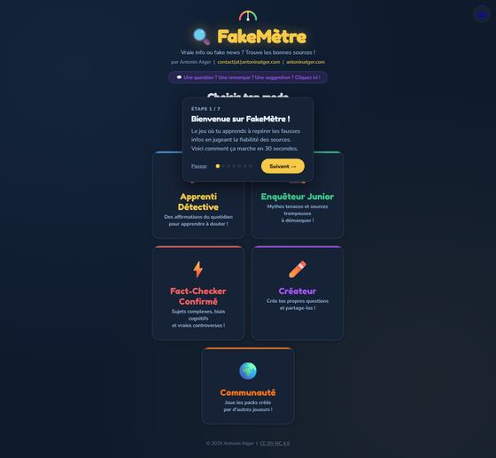
🕵️Fakemètre ↗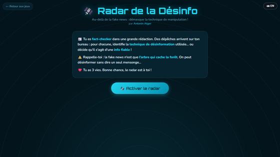
📡Radar désinfo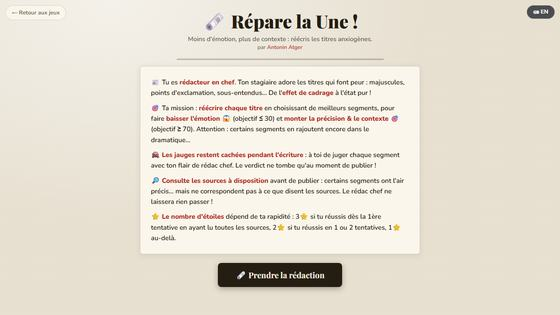
📰Répare la une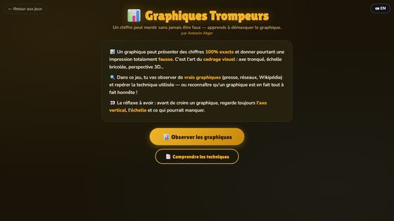
📊Graphiques trompeurs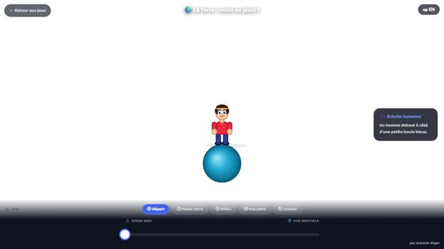
🌍La Terre ronde ou plate ?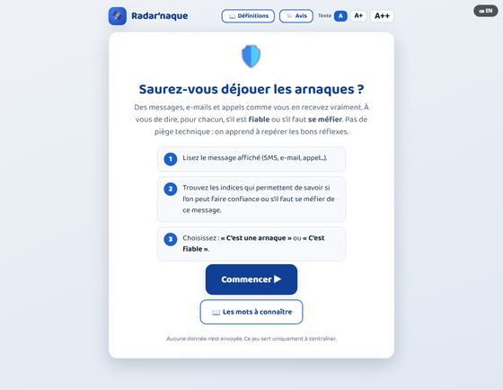
🛡️Radar’naque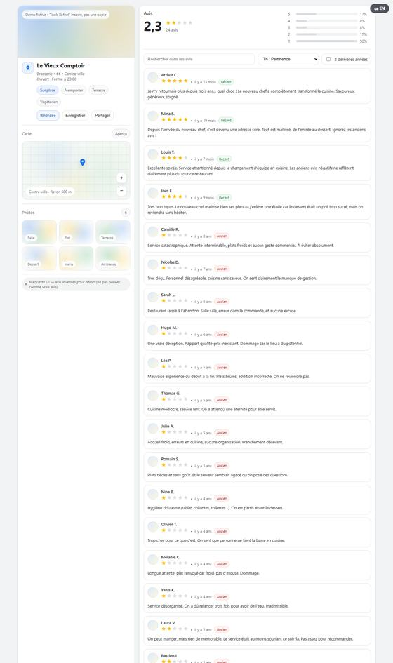
⭐Avis « style Maps »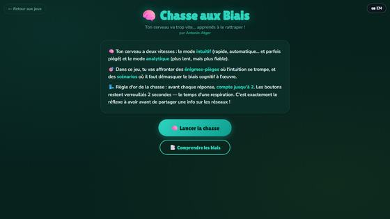
🎯Chasse aux biais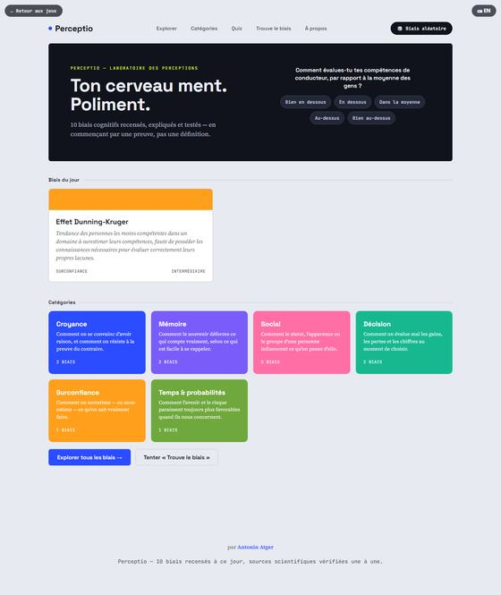
🧪Perceptio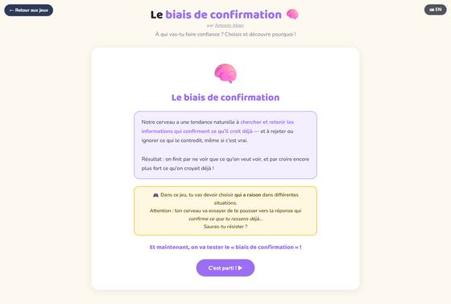
🔎Le biais de confirmation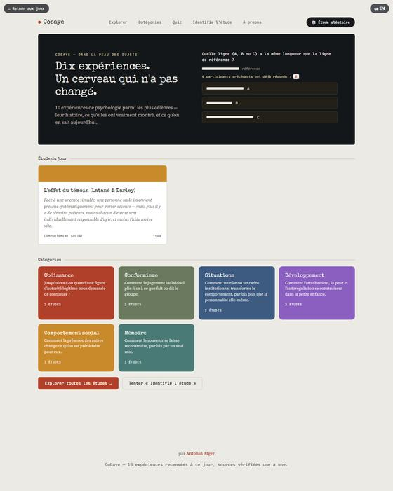
🧫Cobaye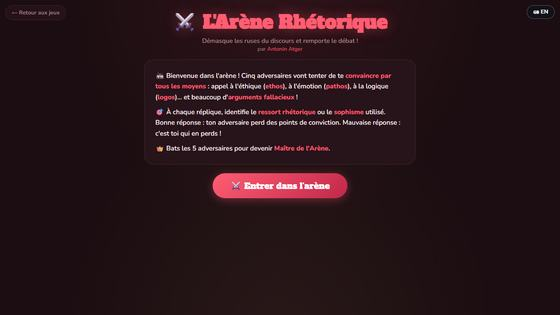
⚔️Arène de rhétorique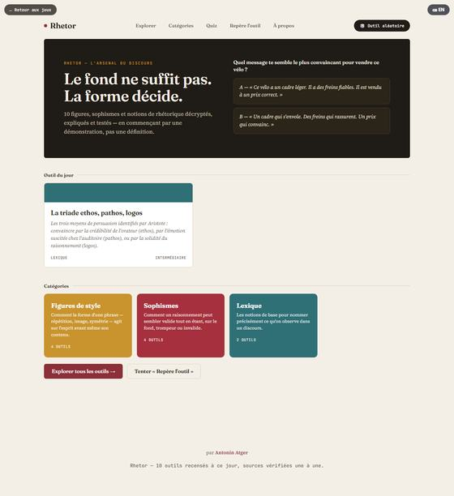
🏛️Rhetor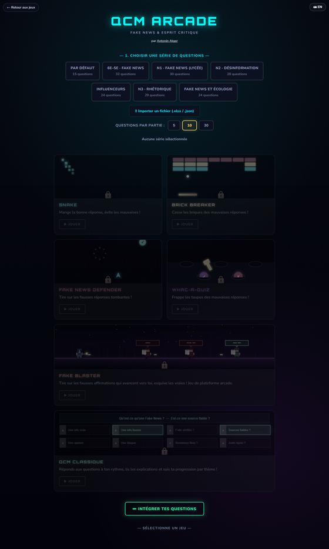
🕹️Arcade quizz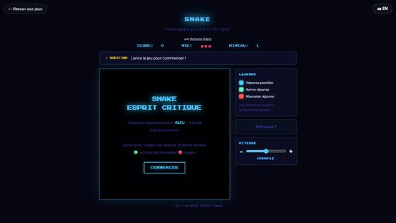
🐍Snake Fake News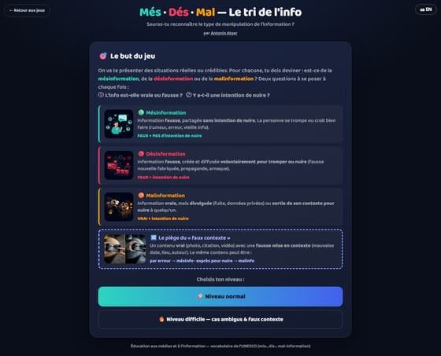
🎲Dés de la mal-information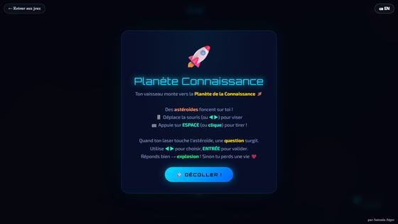
🚀Planète Connaissance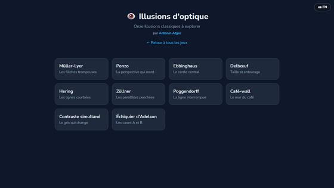
👁️Illusions d'optique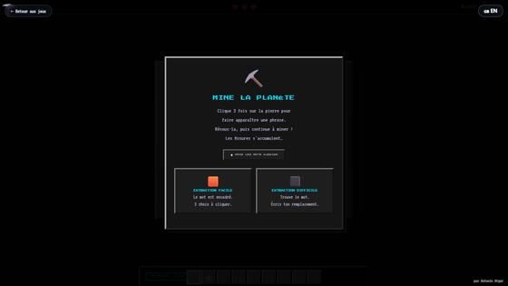
⛏️Mine la Planète